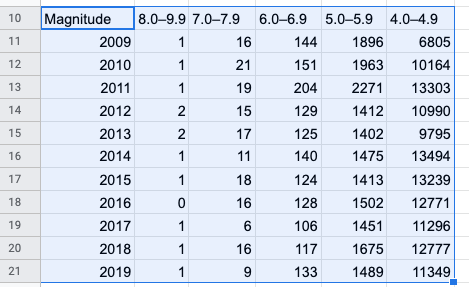

17 Preparing and Cleaning Data, a.k.a. Munging
Preparing your data may not be, strictly speaking, a data move, but it’s a vital part of any real data investigation.
In a class setting, the data you get is often extremely well-behaved. All the rows and columns are correct, and line up perfectly. Measurements are all in the same units, and none are missing.
The problem is that when you get real data, from out in the world, that’s usually not the case. It’s not because people are sloppy (OK, part of it is sloppiness, but not all); often, the people who collected the data are constrained by their tools, or they just had to make decisions about formatting that don’t match with what you need. Sometimes, you get data from a place that wasn’t even set up to be data for anyone else, so you have to adjust.
This short chapter will not tell you anywhere near everything you need to know, but it will address some cleaning issues that arise with the data that appear elsewhere in this book.
17.1 Missing Data
Sometimes, a piece of data is missing. Sometimes, for some reason, there is no value for that attribute in that case. If you’re measuring the heights of all the students in the school, but Alicia was absent that day, her height cell may be empty.
CODAP’s signal for a missing value is, in fact, an empty cell. If a case has a missing value, and that attribute is used in a plot or calculation, CODAP will not plot the point or use the value. It will be as if that case was not in the data set.
When you export data to csv format or import a csv file, a missing value will appear as—nothing! You will see commas right next to each other:
name,height,age
Tim,74,65
Alicia,,12
Aloysius,68,16
Penelope,65,17Most of the time, the way CODAP treats missing data is exactly what you want. Unfortunately, not everyone agrees on how to cope with missing data. Some of the Census data portals, for example, use a huge number to indicate “missing.” Two things to note:
- Therefore you need to go in and change all those big numbers to nothingness, so CODAP will treat them as missing, and
- If you forget or don’t notice, you’ll get massively wrong results.
In the live illustration below, we have 1000 cases from the Census data portal. A student (Aloysius) has grouped the data by Sex1 and computed an aggregate value: the mean income. He concludes that women make more than men because their mean income is nearly 1.9 million dollars while the men make only about 1.6 million.2
Aloysius should notice that the numbers are ridiculous and that something serious is wrong. He should immediately try to figure out how this bogus number appeared. Which leads to the second big mistake: Aloysius should have made a graph first in order to get a feel for the data. So do the following in the live illustration:
- Make a graph of
SexbyIncome. Notice the huge stack of points at a high value. - Select one of those points and look at the table.
You’ll see that some people have incomes of $9,999,999. In fact, if you look further, you’ll see that many of them are children.
What’s going on? The Census data uses that number, 9999999 as their code for “missing.” You could just select them and hide them or set them aside. But let’s actually change them to missing.
There are two basic strategies: do it in CODAP or do it elsewhere. Let’s do CODAP first. We want to change all of those 9999999s at the same time:
- Drag
Incometo the far, far left, making a new level of hierarchy. We seldom group by a numeric value, but this is a perfect time to do so. - Find the
9999999value, and edit it (double click) to be…nothing. Empty. Note: not zero, that’s entirely different! - Drag
Incomeback to the far right. Presto! Reasonable values! (Men’s mean is $47077.74; women get $28249.67.) - Scroll in the table to notice the empty cells in the
Incomecolumn.
You could also have made a separate “income” column, so as not to eliminate the original data.
An alternative strategy—which is sometimes better than using CODAP for things like this— is to export the data from the table, edit the csv file in a text editor, and then import it into a fresh CODAP document. See below.
17.2 Topcodes
Some attributes have special values that mean, “the value here is bigger than the maximum value we care about.” An example is the poverty level as reported in Census data. In some Census data, this value is the “percent of the poverty level” for that person, computed from their income and their family size (The poverty level is higher for bigger families).
In that system, a value of 100 means “at the poverty level.”
But once you’re above a certain level, you’re not even close to being impoverished, so they put a number in to indicate, “out of poverty.” In some datasets, that value is 501, that is, your income is more than five times the poverty level.
One consequence is that if there is a topcode, you must not calculate the mean poverty level for a group, or, at least, you have to interpret it correctly!
17.3 Cleaning with a Text Editor
This topic could be a whole book, so we will have to be satisfied with first steps.
A text editor is an essential tool for data preparation and cleaning. CODAP will help a lot, but with real, messy data, a good text editor will save you hours with a large data set. The key skill is getting good with global replace.
The tool we’re talking about should be a plain text editor so that the result is a genuine plain text csv file. A Word document (.docx) will not work. Word (or Pages or any other word-processor) can indeed “save as plain text” or “export to plain text,” but you may have a decent plain-text editor on your computer.
Global replace is your friend. Usually it’s in the Edit menu, often part of Find. If you want to change all the values 9999999 to be missing (as in the example above), do a find for 9999999, put nothing in the Replace box, and choose Replace all.
Sometimes you have to be tricky. Here’s a common situation: you’ve copied a table from the web and pasted it into your editor. You want to turn it into a csv file: comma-separated values.
Here is some earthquake data in a table in Wikipedia:

If I just copy that part of the web page and paste it sinto a text editor, I see this:
Magnitude 2009 2010 2011 2012 2013 2014 2015 2016 2017 2018 2019
8.0–9.9 1 1 1 2 2 1 1 0 1 1 1
7.0–7.9 16 21 19 15 17 11 18 16 6 16 9
6.0–6.9 144 151 204 129 125 140 124 128 106 117 133
5.0–5.9 1,896 1,963 2,271 1,412 1,402 1,475 1,413 1,502 1,451 1,675 1,489
4.0–4.9 6,805 10,164 13,303 10,990 9,795 13,494 13,239 12,771 11,296 12,777 11,349
Total 8,862 12,309 15,798 12,548 11,341 15,121 14,795 14,420 12,860 14,586 12,985Notice these important facts:
- The spaces between the values are tabs.
- The numbers use commas to indicate thousands.
If I drop this in as a csv, CODAP might interpret the tabs correctly, but the commas will cause problems, either making more values or turning numeric values into categoricals. We want to get rid of the commas and change the tabs to…commas.
Therefore, order matters. If you change tabs to commas first, you will have this:
Magnitude,2009,2010,2011,2012,2013,2014,2015,2016,2017,2018,2019
8.0–9.9,1,1,1,2,2,1,1,0,1,1,1
7.0–7.9,16,21,19,15,17,11,18,16,6,16,9
6.0–6.9,144,151,204,129,125,140,124,128,106,117,133
5.0–5.9,1,896,1,963,2,271,1,412,1,402,1,475,1,413,1,502,1,451,1,675,1,489
4.0–4.9,6,805,10,164,13,303,10,990,9,795,13,494,13,239,12,771,11,296,12,777,11,349
Total,8,862,12,309,15,798,12,548,11,341,15,121,14,795,14,420,12,860,14,586,12,985which is a disaster! (Make sure you understand why!)
So we must get rid of the commas first! Do a global replace with a comma in the Find box and nothing in Replace. Then do a Replace all.
Magnitude 2009 2010 2011 2012 2013 2014 2015 2016 2017 2018 2019
8.0–9.9 1 1 1 2 2 1 1 0 1 1 1
7.0–7.9 16 21 19 15 17 11 18 16 6 16 9
6.0–6.9 144 151 204 129 125 140 124 128 106 117 133
5.0–5.9 1896 1963 2271 1412 1402 1475 1413 1502 1451 1675 1489
4.0–4.9 6805 10164 13303 10990 9795 13494 13239 12771 11296 12777 11349
Total 8862 12309 15798 12548 11341 15121 14795 14420 12860 14586 12985It turns out that CODAP would interpret this just fine; it approves of tabs as separators.
But suppose we want to replace all the tabs with commas. The tricky part here is that if you try to type a tab in the Find box, the cursor will probably jump to the Replace box. No problem. Copy a tab from the document and Paste it into the Find box. Put a comma in Replace, choose Replace all, and you’re done.
Magnitude,2009,2010,2011,2012,2013,2014,2015,2016,2017,2018,2019
8.0–9.9,1,1,1,2,2,1,1,0,1,1,1
7.0–7.9,16,21,19,15,17,11,18,16,6,16,9
6.0–6.9,144,151,204,129,125,140,124,128,106,117,133
5.0–5.9,1896,1963,2271,1412,1402,1475,1413,1502,1451,1675,1489
4.0–4.9,6805,10164,13303,10990,9795,13494,13239,12771,11296,12777,11349
Total,8862,12309,15798,12548,11341,15121,14795,14420,12860,14586,12985Now, that is in perfect shape for import—–even though it has other problems!
It takes a while to learn to wield the power of global replace. You will use Undo a lot while you’re learning. There are more powerful tools, such as using regular expressions in your replace commands, but plain old Replace all will take you far.
17.4 “Clean” does not mean “useful”…
I cannot tell you how many times I have cleaned a file and imported it only to realize that the problems went deeper than just cleaning.
In the file we just looked at, there are two problems, one small, one big.
The first is small: there is a row for Total. We should get rid of it. CODAP is an analysis package. We do our own totals. More to the point, if we did do a total, we’d get a total that included the Total.
A more insidous problem is how the table is organized. It’s often good to ask yourself, “what is a case here?”
Each row of the table is a range of magnitudes. Each column is a year. Really, we’d probably rather the years were rows; then it would be easy to make a “total quakes” with a formula that just added the numbers for the magnitude ranges.
Transposition
This is a job for transposition: making the rows into columns and the columns into rows. CODAP’s Transformers plugin can help you transpose data, but Google sheets also does it (as does any spreadsheet program such as Excel or Numbers). So let’s see how to do this using sheets.
- Make sure your data’s filename ends in
.csv. - Import your csv file into Sheets (File/Import) and select the area your data is in.

- Copy the area.
- Select some empty cell.
- In the Edit menu, choose Paste Special, and then Transposed. The data appears with rows and columns reversed. It is also selected.

- With the new data area selected, Copy again.
- Make a new, empty document in CODAP.
- In the Tables tool, choose new from clipboard.
Shazam! You have the transposed table in CODAP.
- The first attribute will be called
Magnitude. Because of the transposition, that’s now wrong! Change its name to something appropriate, in our case,Year.

Stacking and tidification
Suppose you survey some friends, asking each one if they are a cat person or a dog person. Your data might look like this:
| Cat | Dog |
|---|---|
| Abby | Chris |
| Blaine | Frank |
| Emily |
This is a perfectly reasonable format for collecting your data, but it can give data anaysis software some trouble. The problem is, what is a case? It looks as if the first case is Abby and Chris, so is a case a pair? Then what about Emily? And what connects Abby to Chris except that they were the first people surveyed who preferred cats and dogs, respectively.
CODAP (and for many other programs) would prefer that you format the data like this:
| Name | Likes |
|---|---|
| Abby | Cats |
| Blaine | Cats |
| Chris | Dogs |
| Emily | Cats |
| Frank | Dogs |
Now a case is a person, with two attributes: a name and a preferred pet.
Notice that this is not the same thing as the transposed data, above. This time, we have taken the attribute names and made them the values of the second attribute, Likes, and taken all the values of both attributes (Cat and Dog) and made them the values of Name.
So: if your data come that first way, how do you get them into the second, preferred form? We call the procedure stacking, and there’s a plugin for that.
We’ll expand this eventually! xxx Also xxx to show how to enter the data in hierarchy.